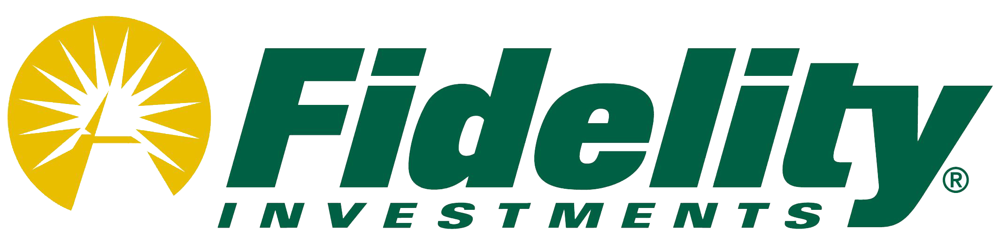

Senior Software Engineer & Tech Lead
Plano, TX
June 2018 - Present
Full Stack, currently leading migration of legacy applications to Angular framework with an emphasis on Material design to improve client side experiences, unify look and feel across products, and transition to a modern tech stack using event driven messaging. In addition I mentor junior developers through onboarding, lunch and learns, and code reviews.
- Guided team of developers and coordinated with SMEs to complete roll out of Advanced QoS features, successfully migrating initial components from JSF to Angular
- Decomposed company sales workflow by domains, took isolated contexts and migrated them to micro services that are a part of a new event driven messaging architecture
- Implemented versioned APIs and bounded contexts using DTOs and JPA to reduce dependencies, remove cross-schema communications, improve scalability, and properly define domains
- Leveraged front end expertise to successfully migrate legacy application pages to Angular, thus reducing page load times, improving maintainability, and enriching the customer experience
- Designed and developed solution for persisting user application preferences through a micro service using a mongo data store; presented during company hackathon and was approved to move forward with implementation
- Organized lunch and learn on Angular best practices, standards, and common problems with solutions, providing the team with an opportunity to collaborate and learn while increasing knowledge and promoting work culture
- Introduced concept of correlations IDs, improved logging and tracking of events through an event driven system
Environment
Mac OSLinuxElastic SearchHTMLJQueryAJAXCSSXMLMySQLMyBatisMongoJPADTOIntelliJMicro ServicesAgileScrumKanbanTDDKarmaSeleniumSpring MVCRESTOOGITCoberturaNexusMavenTomcatJUnitSoapUIPostmanSlackJIRAPivotalMS PowerPoint/Word/ExcelConfluence WikiSplunkAngularJS/AngularTypeScriptJavaScript
Senior Software Engineer
Irving, TX
August 2015 - June 2018
Java microservice architecture redesign to support scaling of reporting abilities for our customer solutions as part of our push for a more microservice oriented architecture using Spring Boot, Kakfa, JPA, and Docker. In addition, I worked on internal tools development including high priority enhancements, as well as managing ongoing relationships with major carriers like Sprint/T-Mobile/Verizon/AT&T.
- Manage ongoing relationships with major network carriers including T-Mobile, Sprint, Verizon, and AT&T.
- Took over role as permanent Scrum Master, over time helped the team to develop consistent results and velocity
- Worked with stakeholders/clients to directly address, prioritize, and deliver high impact items
- Developed sim management functionality for new vendors/partners, decreased costs for airtime and manual involvment in process
- Lead efforts to onboard new vendors, including knowledge share, API integration, and network configurations
- Migrated legacy code from previous code base, adhering to new coding standards and best practices
- Supported development initiatives to enhance the core technology and improve customer experiences
- Collaborated with core platform team to design architecture for new features
- Created scripts as workarounds to current application logic gaps, passed to tier 2 to reduce support load
- Documented personal notes whenever possible, updating dev and onboarding guides for new developers and common issues
- Created scripts for quicker testing, documented so that QA team members could easily reuse
- Dealt with shifting priorities, worked around resource gaps
- Worked with major carriers to setup m2m services, upgrade APIs, and troubleshoot customer issues
- Designed and developed audit capabilities for carrier service integrations
- Presented on multiple occasions including functional demos to upper management
- Leveraged acquired technology knowledge to demo and implement product solutions
- Led carrier integration efforts to upgrade carrier APIs and troubleshoot connectivity issues
- Initiated and led agile meetings including scrum, grooming, retrospectives, and planning sessions
Environment
Mac OSLinuxM2MGroovyGrailsElastic SearchCXFHTMLJavaScriptJQueryAJAXCSSXMLMySQLAgileTDDSpring MVCRESTSOAPOOGITBambooCoberturaNexusMavenTomcatSpockJUnitSoapUIPostmanSlackJIRAPivotalMS PowerPoint/Word/ExcelConfluence WikiLogic MonitorSplunkAngularTypeScript

Software Developer
Westlake, TX
July 2012 - August 2015
Owned and maintained high visibility maturing application as well as supported over five other applications within the company’s data access layer. UI/Middle Tier Java developer for a growing application dealing with Reference Data Consolidation. I have had the opportunity to start on this endeavor in its infantile state and watch it grow into a high visibility project, learning to deal with a variety of challenges along the way.
- Facilitated quarterly release using SAFe framework through collaborating with architecture leads
- Owned vendor product adoption, became subject matter expert and supported clients
- Led multiple Spring MVC projects, interfaced with global project teams to ensure on time deliverables
- Experienced in analyzing and completing Java, HTML, JavaScript code stubs written by senior developers
- Led efforts during multiple application site migrations, performed UNIX configurations and supported clients
- Documented user stories In JIRA and created developer tasks
- Performed code reviews through FishEye/Crucible for developers to improve quality and efficiency
- Reviewed change requests and collaborated with development teams to prioritize backlogs for releases
- Piloted disaster recovery automation efforts, utilized HP Operations Orchestration studio to create release engineering processes to minimize manual inputs and reduce resources on call
- Supported multiple projects in testing, development, and maintaining deliverables
- Developed web services using both REST and SOAP to support DAL SDS application, implemented SOA APIs
- Tested web services using both SoapUI as well as Postman
- Wrote JUnits and refactored to improve Sonar nightly build reports
- Worked with quality assurance team to document and prioritize defects documented in HP Quality Center
- Created user interfaces for new functionality for legacy projects using HTML, JavaScript, JQuery, MVC
- Managed branching and merging of project source code in SVN to align with quarterly project releases
- Supported multiple applications through HP Service Manager, handling incident requests in a timely manner
- Documented vendor product setup steps as well as testing procedures through SoapUI and HermesJMS
- Developed user interfaces for FundRef application, modifying form elements from screen to screen
- Developed middle tier for FundRef application, modifying XML bindings between domain and XSD objects
Environment
WindowsLinuxJava/J2EEHTMLJavaScriptJQueryAJAXCSSXML/XSDXSLTShell ScriptingOracle 11gOracle SQL DeveloperPL/SQLJDBCiBatisMyBatisAgileTDDSeleniumSpring MVCRESTSOAPSOAOOSVNBambooSonarFishEye/CrucibleAntMavenSpringSourceTomcatWinSCPPuttyJUnitSoapUIPostmanSeleniumJIRAHP Quality CenterHP Operations OrchestrationHP Service ManagerMS PowerPoint/Word/ExcelSharePoint